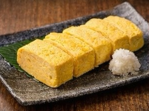
メニュー
逸品
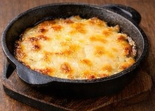
チーズ
和食・重
495円
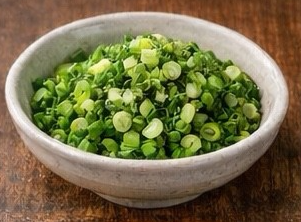
ねぎ
和食・野菜
495円
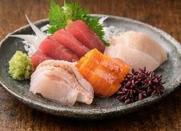
お造り3種盛り
魚・軽
858円
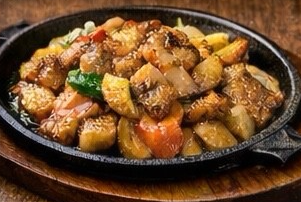
どて焼
肉・茶色
638円
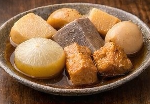
おでん
茶色・和食
748円
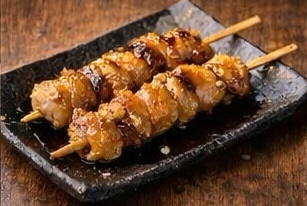
焼き鳥（2本）
肉
462円
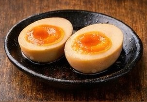
煮卵
茶色・スピード
352円
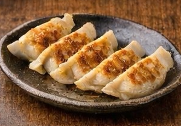
ぎょうざ（6個）
肉・海外
528円
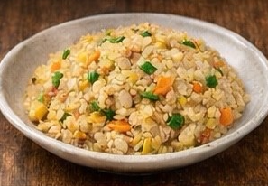
チャーハン
海外
748円
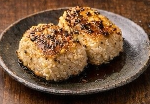
焼きおにぎり（2個）
茶色・和食
462円
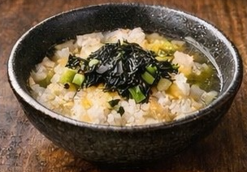
茶漬け
和食
528円
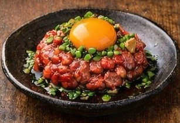
ユッケ
海外・肉
858円
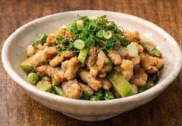
鶏皮ポン酢
肉・軽
462円
鉄板焼き
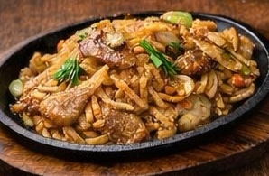
やきそば
肉・重・野菜
748円
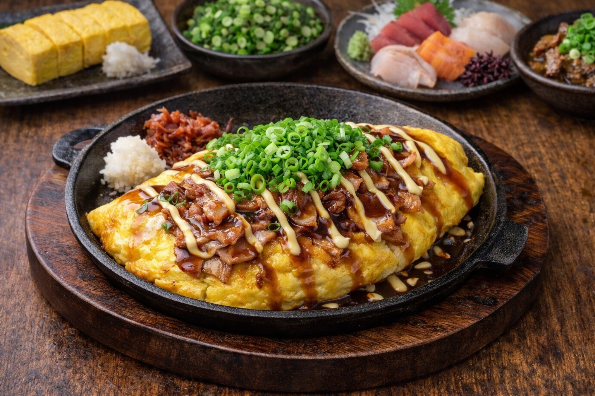
とん平焼き
野菜・肉
638円
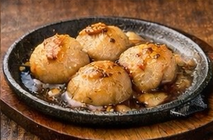
ほたてのバター醬油
魚・重
858円
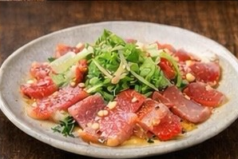
カルパッチョ
魚・軽・洋
858円
揚げ物
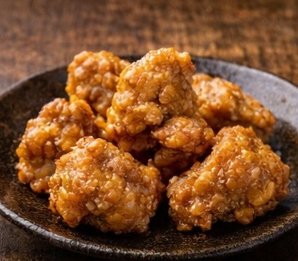
唐揚げ（5個）
揚げ物・茶色
638円
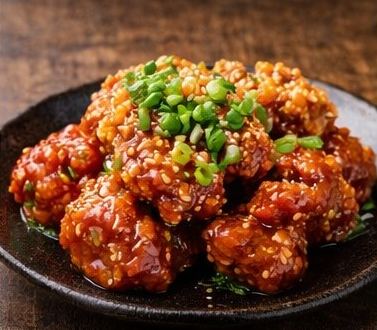
ヤンニョム
揚げ物・海外
748円
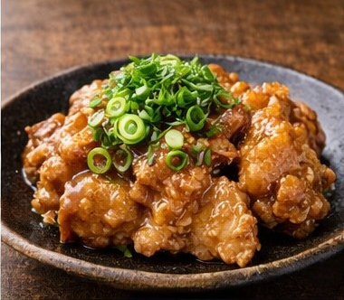
油淋鶏
揚げ物・茶色
748円
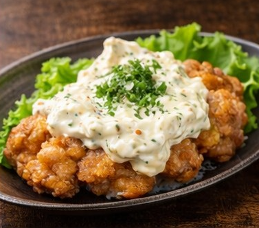
タルタル
揚げ物・重
792円
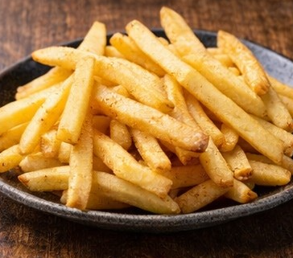
ポテト
揚げ物・黄色
462円
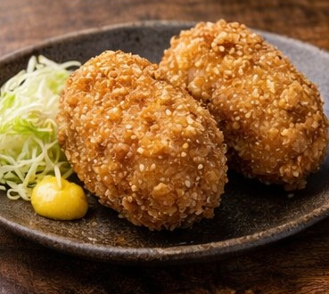
コロッケ（2個）
揚げ物・肉・重
528円
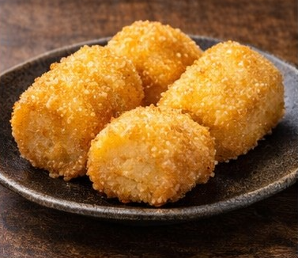
もちチーズフライ
揚げ物・重
638円
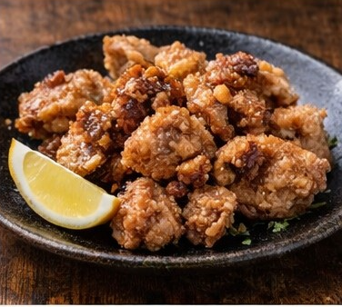
たこの唐揚げ
揚げ物・魚
748円
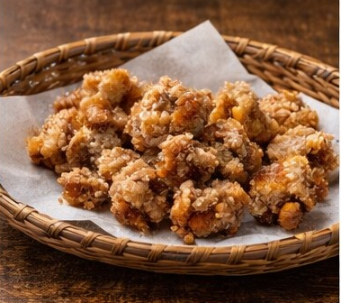
軟骨唐揚げ
揚げ物
528円
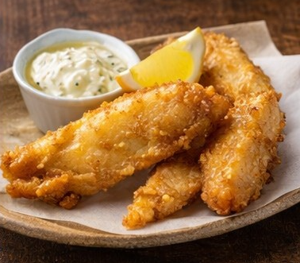
フィッシュ&チップス
揚げ物・魚・洋
858円
サラダ
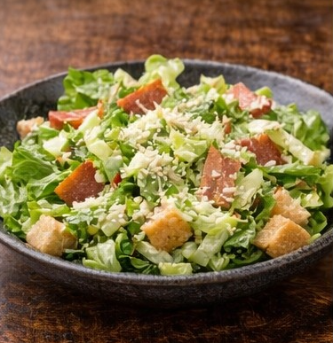
シーザーサラダ
野菜・軽
638円
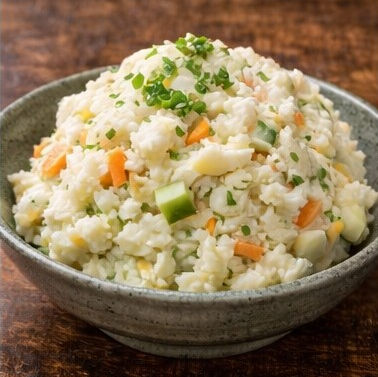
ポテトサラダ
野菜・重
495円
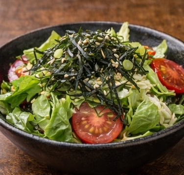
チョレギサラダ
野菜・海外
638円
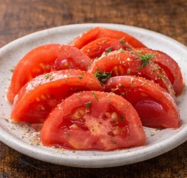
トマト
野菜・軽
418円
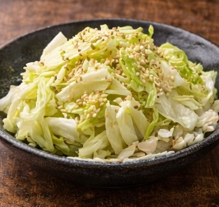
塩だれキャベツ
野菜・スピード
352円
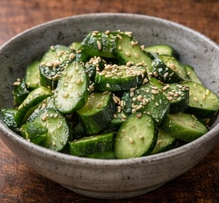
やみつききゅうり
野菜・スピード
352円
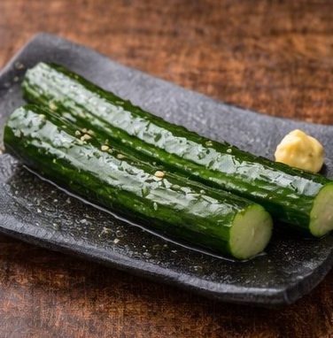
きゅうりの一本漬け
野菜・スピード
418円
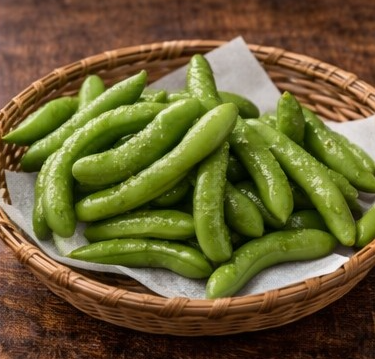
枝豆
野菜・スピード
352円
ドリンク
アルコール
サワー各種
洋
462円
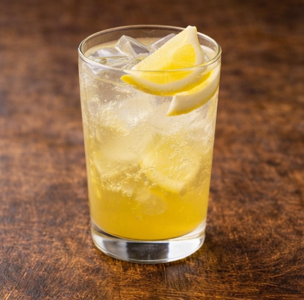
チューハイ各種
洋
462円
生ビール
酒
605円
焼酎
酒
528円
ハイボール
酒
528円
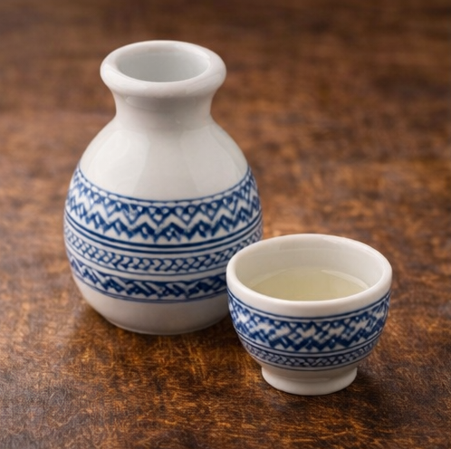
日本酒
酒
638円
ワイン
酒・洋
528円
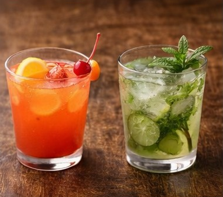
カクテル各種
洋・甘
550円
ソフトドリンク
コーラ
炭酸・ジャンク
308円
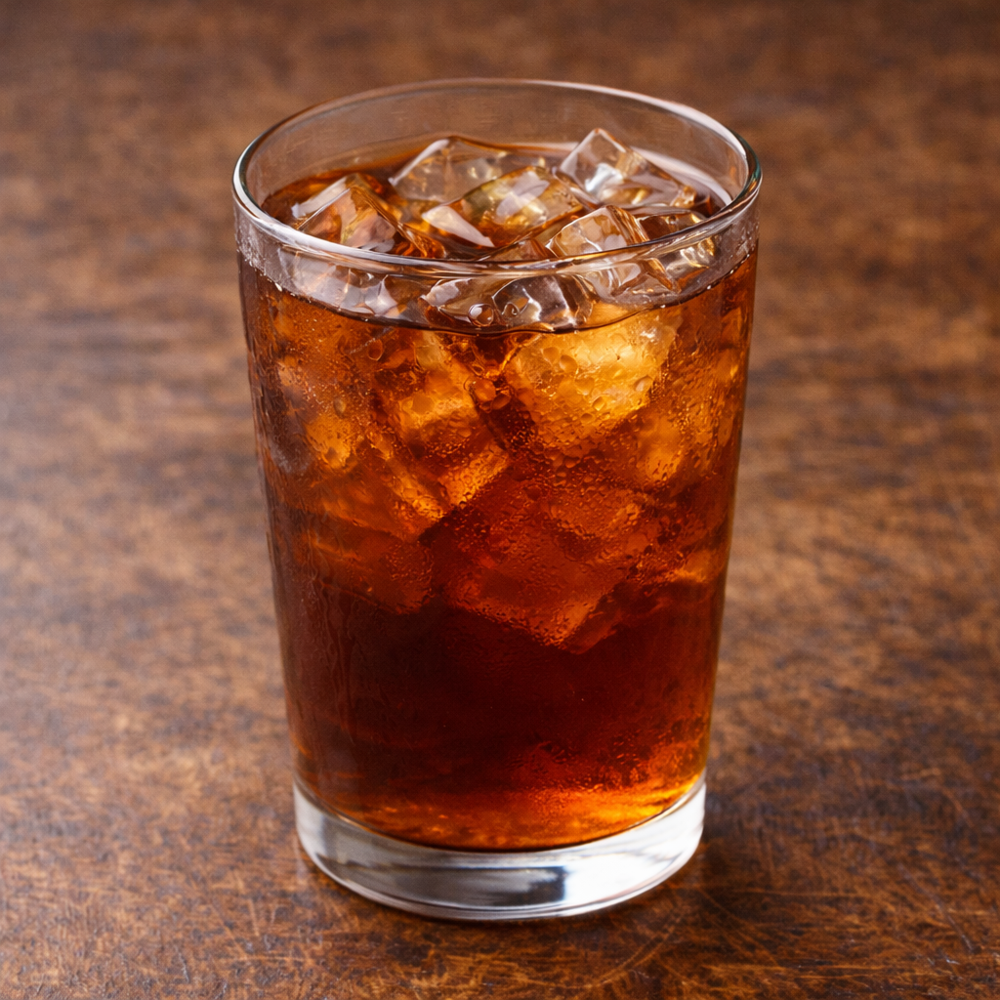
ウーロン茶
茶色・軽
308円
オレンジジュース
洋・甘
352円
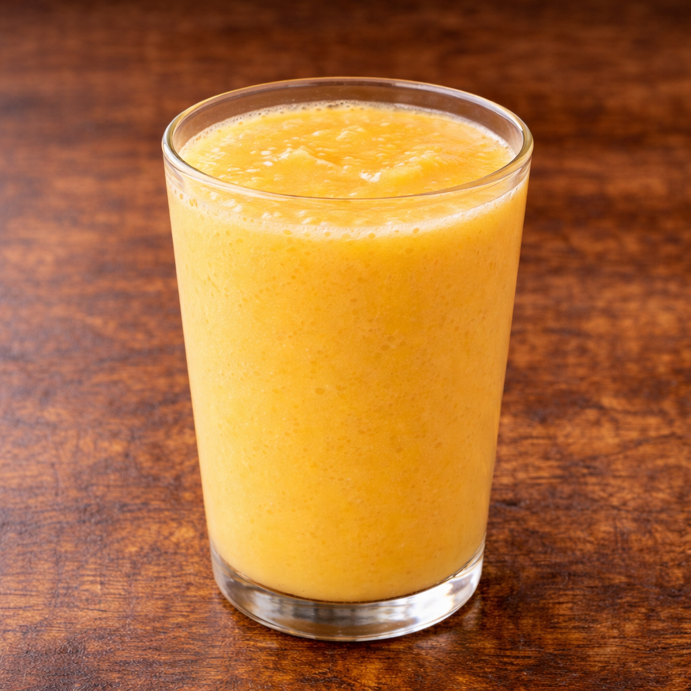
ミックスジュース
洋・甘
418円
ジンジャーエール
甘
352円
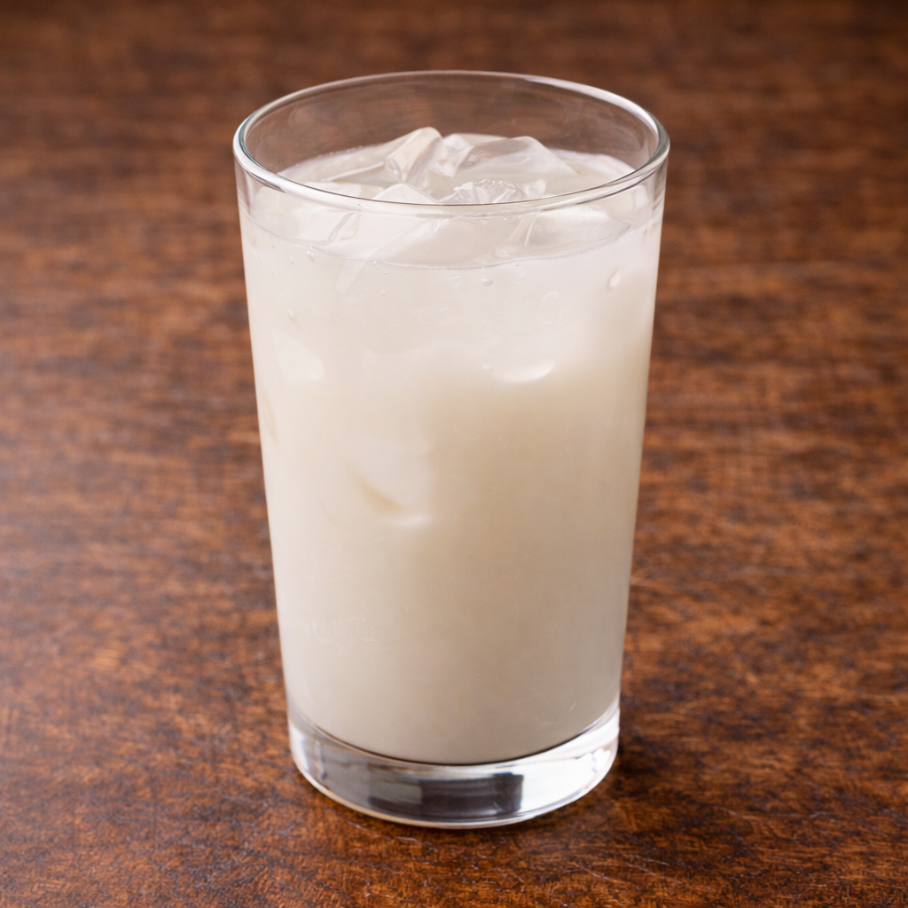
カルピス
甘
352円
水
ノンアル
0円
注文確認
数量を選んでください
合計: 0円